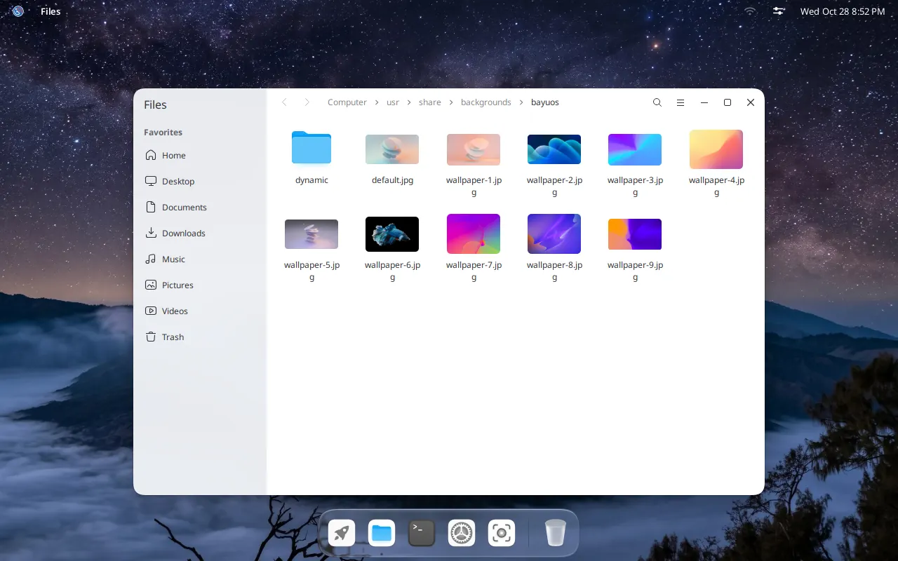
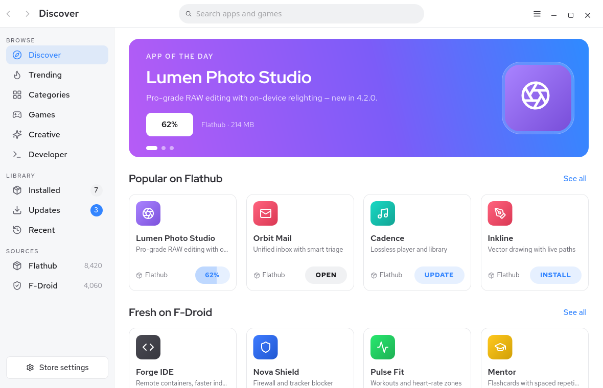
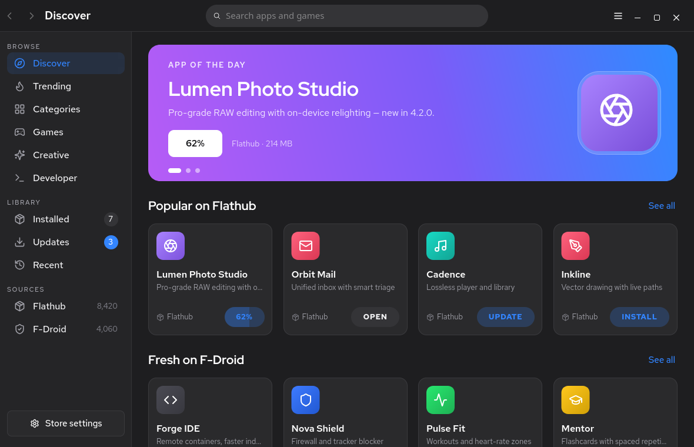
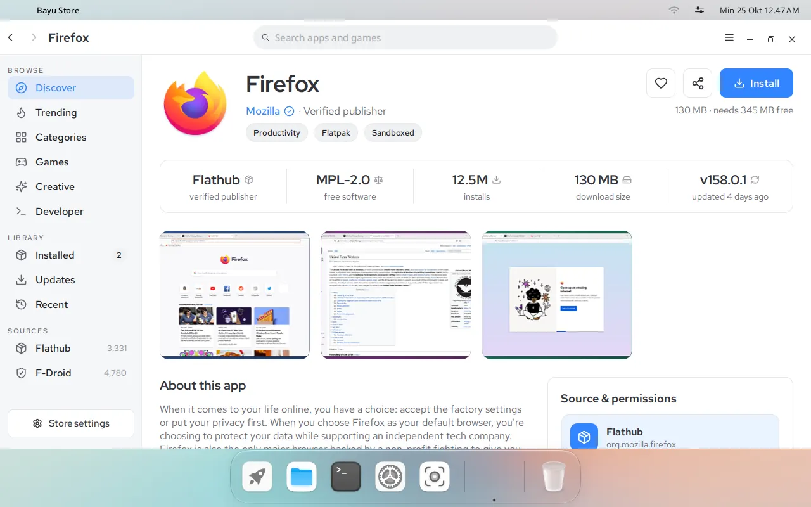
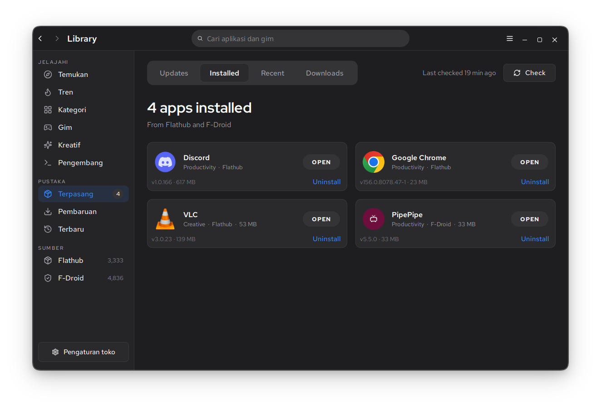
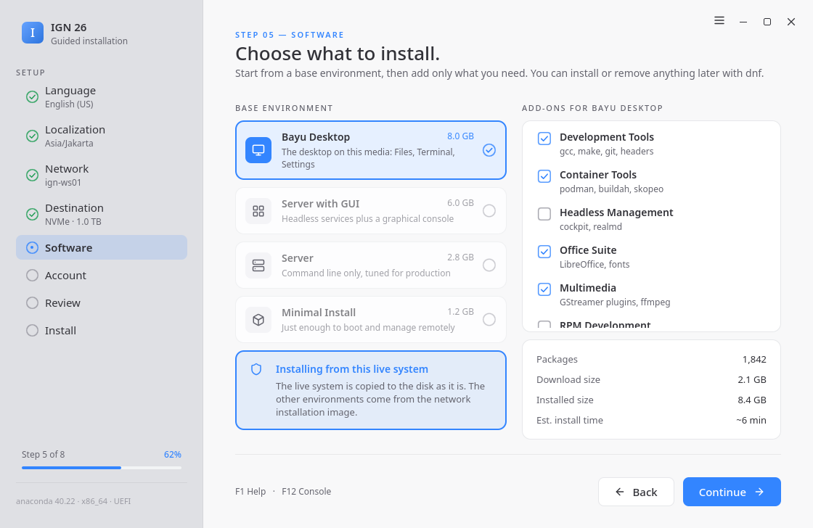
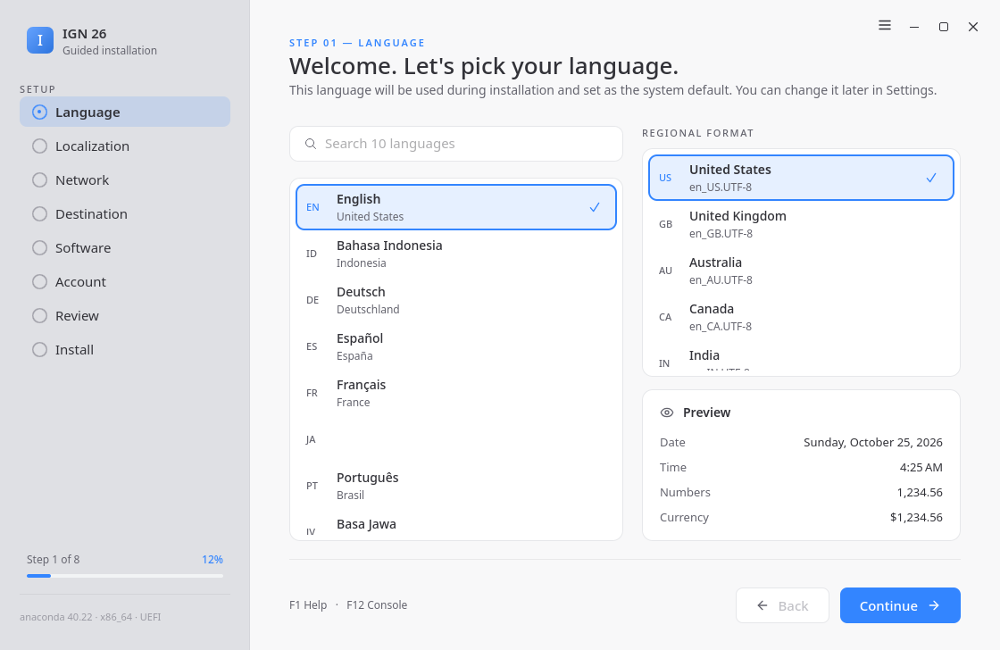
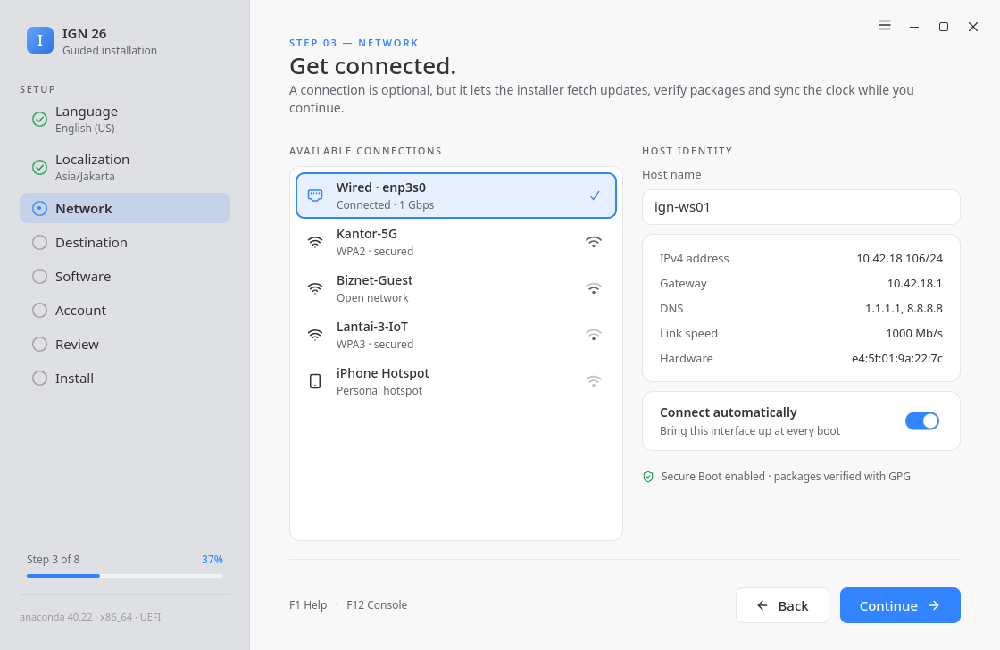
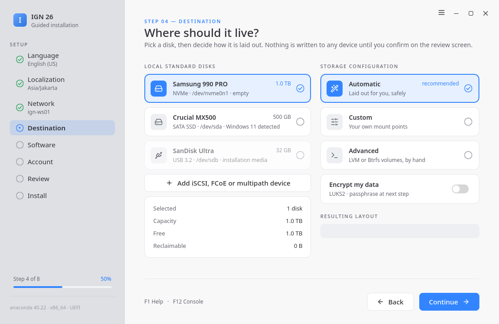
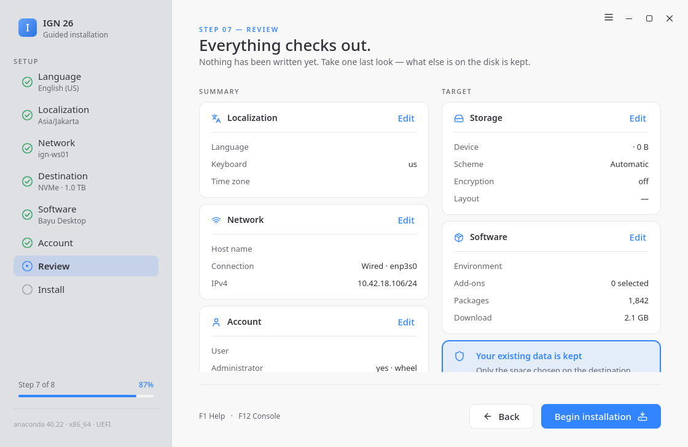

Kompositor & shell
Kompositor Wayland dengan panel, dok, peluncur, dan ikhtisar sendiri — tanpa shell GNOME atau KDE di bawahnya.
IGN 26 Ciremai · Beta 6 · ISO live · Sudah dengan desktop Bayu
IGN 26 hadir dengan BAYU — lingkungan desktop Wayland tempat GTK 4 dan Qt 6 akhirnya tampak sama. Pasang aplikasi Linux lewat Flatpak, jalankan aplikasi Android lewat Lapis, dan kelola keduanya dari satu toko.
Nama sandi
IGN 26 sekarang punya nama sandi: Ciremai, dari Gunung Ciremai, gunung tertinggi di Jawa Barat. Bayu adalah desktop rilis ini. Tonton videonya untuk berkenalan dengan keduanya.
Lingkungan desktop Bayu
BAYU adalah lingkungan desktop Wayland yang menjadi inti IGN 26, dibangun komponen demi komponen — kompositor, shell, sesi, manajer berkas, pengaturan, dan terminal — sehingga setiap jendela berbicara dalam satu bahasa visual, bukan tiga. Di image nightly, Anda juga bisa memilih tata letak: Dock dengan bilah atas untuk menu, atau satu Panel di sepanjang bawah layar. Pengaturan > Desktop menggantinya saat itu juga.

Kompositor Wayland dengan panel, dok, peluncur, dan ikhtisar sendiri — tanpa shell GNOME atau KDE di bawahnya.
Greeter dan manajer sesi yang serasi, sehingga tampilannya dimulai sejak layar masuk dan tidak pernah terputus.
Tab, tampilan terbelah, penanganan arsip, dan Buka Dengan yang sadar Flatpak, dalam bingkai jendela yang sama seperti aplikasi lain.
Wi-Fi, Bluetooth, layar, suara, papan ketik, dok, dan tampilan dalam satu aplikasi yang bisa dicari.
Bertema mengikuti warna aksen sistem serta mode terang/gelap secara otomatis.
Flathub dan F-Droid dalam satu katalog — pasang, perbarui, dan hapus dari satu tempat.
Pemasang terpandu delapan langkah yang bekerja untuk distribusi Linux berbasis systemd mana pun.
Aplikasi Android sebagai jendela Wayland sungguhan, ditenagai kernel dengan dukungan binder.
Wallpaper bawaan adalah empat gambar Gunung Bromo: pagi, siang, sore, dan malam. Gambarnya berganti sendiri mengikuti jam matahari terbit dan terbenam di zona waktu Anda, jadi WIB, WITA, dan WIT berganti pada jamnya masing-masing. Anda juga bisa membuatnya mengikuti mode terang dan gelap. Set kedua bergambar hutan ada di Pengaturan > Wallpaper.
Sistem desain Pitaloka
Setiap warna, radius, tingkat huruf, dan elevasi di BAYU berasal dari satu berkas: tokens.json. Dari berkas itu Pitaloka membangkitkan stylesheet untuk tiap toolkit, sehingga aplikasi GTK 4 dan Qt 6 yang berdampingan konsisten sampai ke piksel — radius kartu sama, aksen sama, cincin fokus sama.
tokens.jsonSumber kebenaranpitaloka-web.cssWebpitaloka.cssGTK 4pitaloka.qssQt 6pitaloka.hHeader C++62 / -1.640 / -1.022 / -0.314 / 012 / +0.4bg-window #F5F6FA
bg-window #1B1B1D
Jendela Bayu Store yang sama dalam dua tema. Tidak ada yang digambar ulang — token hanya berubah ke nilai gelapnya, dan setiap aplikasi GTK maupun Qt di sistem ikut menyesuaikan.
Bayu Store
Bayu Store menelusuri sumber Linux dan Android sekaligus lalu menampilkan hasilnya dalam satu daftar. Pasang aplikasi desktop Flatpak dan aplikasi Android F-Droid dari layar yang sama, lalu perbarui keduanya dari tab Pembaruan yang sama.


Satu kueri mengembalikan hasil Flathub dan F-Droid sekaligus, terurut dan tanpa duplikat, dalam waktu jauh di bawah satu detik.
Lencana Terverifikasi dan Sumber terbuka, nama penerbit, lisensi, serta pengenal SPDX ditampilkan sebelum Anda memasang.
Persempit berdasarkan sumber, lisensi, verifikasi, atau kebaruan tanpa meninggalkan daftar hasil.
Satu tombol per aplikasi. Progres tampil langsung, dan aplikasi muncul di peluncur begitu selesai.
Pembaruan Flatpak dan Android berbagi antrean yang sama, lengkap dengan ukuran dan catatan rilis sebelum Anda memutuskan.
Aktifkan atau nonaktifkan Flathub dan F-Droid, tambahkan cermin, dan tentukan seberapa sering katalog disegarkan.
Lapis · Android di Linux
Lapis menjalankan image Android berbasis LineageOS di dalam kontainer systemd-nspawn yang berjalan di atas kernel Anda sendiri. Tanpa mesin virtual, tanpa LXC, tanpa Python — hanya satu biner Go statis dan beberapa unit systemd. Setiap aplikasi Android terbuka sebagai jendelanya sendiri, berdampingan dengan aplikasi Linux, dalam dok dan alt-tab yang sama.
Tiap aplikasi adalah jendela Wayland tersendiri
Dijalankan di dalam kontainer systemd-nspawn
Binder murni Go · NAT nftables via netlink · penerus DHCP + DNS · seccomp BPF mentah · shim PID-1 minimal
Kernel Anda sendiri. Tanpa hypervisor, tanpa penjadwal kedua.
Nabau · pemasang universal
Nabau adalah pemasang terpandu yang diperkenalkan bersama IGN 26, dan sengaja dibuat netral terhadap distribusi. Delapan langkah berbahasa sederhana, tinjauan menyeluruh sebelum satu bita pun ditulis, paket terverifikasi GPG, dan dukungan Secure Boot — tidak ada bagian alurnya yang terikat pada IGOS Nusantara.

Pilih satu dari dua belas bahasa antarmuka
Zona waktu, papan ketik, dan format
Kabel atau Wi-Fi, nama host, opsional
Disk, skema, enkripsi opsional
Lingkungan dasar plus pelengkap
Pengguna, kata sandi, hak administrator
Semuanya dalam satu layar sebelum ditulis
Progres, log, dan mulai ulang yang bersih




Secure Boot tetap aktif, dan setiap paket diperiksa sebelum ditulis ke disk.
Hanya ruang yang Anda pilih di disk tujuan yang disentuh. Sisanya dibiarkan utuh.
F1 membuka bantuan, F12 masuk ke konsol. Pemasang tidak pernah menyembunyikan apa yang sedang dikerjakannya.
Indonesia, Jawa, Sunda, Melayu, Mandarin, Jepang, Korea, Spanyol, Prancis, Jerman, Portugis, Rusia.
Juga di rilis ini
Indonesia, Jawa, Sunda, Melayu, Mandarin, Jepang, Korea, Spanyol, Prancis, Jerman, Portugis, dan Rusia — diterjemahkan di shell, pengaturan, toko, dan pemasang.
Keanehan papan ketik dan trackpad, driver SMC, serta bawaan tombol Command yang masuk akal, sehingga MacBook tetap terasa seperti MacBook.
Driver untuk chipset Broadcom di MacBook lawas, sudah ada di ISO. Image nightly menambahkan adaptor USB Realtek, MediaTek, Ralink, dan Atheros yang umum. Tidak perlu kabel untuk terhubung saat pemasangan.
Setiap paket dan image dibuat dengan Podman di CI, sehingga setiap build dapat direproduksi dan diaudit sejak komit pertama.
Boot image dari flash disk dan langsung pakai sistem jadinya. Pasang ke disk nanti dari sesi yang sama — atau tidak sama sekali, dan terus jalankan secara live.
Berlisensi ganda GPL-3.0 dan BSD-3-Clause. Setiap komponen adalah perangkat lunak bebas, dengan sumber dan resep build yang diterbitkan lengkap. Tidak ada yang disembunyikan.
Printer jaringan dan printer USB tanpa driver langsung disiapkan begitu terhubung. Pengaturan > Printer bisa mencetak halaman uji, memilih printer utama, dan menampilkan antrean cetak. Pemindai juga bisa dipakai. Sudah ada di image nightly.
Pengaturan > Pembaruan Sistem mengunduh pembaruan sistem di latar belakang dan memasangnya saat komputer dimulai ulang. Pembaruan aplikasi ada di Bayu Store. Sudah ada di image nightly.
lsusb, lspci, lshw, hwinfo, sensors, smartctl, nvme, iw, dan ethtool sudah tersedia, jadi Anda bisa melihat perangkat keras yang ada dan melaporkan masalah. Sudah ada di image nightly.
Tanya jawab
IGOS Nusantara 26 (IGN 26), dengan nama sandi Ciremai, adalah distribusi Linux gratis buatan Indonesia. IGN 26 dibangun di atas AlmaLinux 10 dan hadir dengan Bayu, desktop Wayland buatannya sendiri, Bayu Store untuk aplikasi, Lapis untuk aplikasi Android, dan pemasang Nabau.
Ya. Anda bebas mengunduh, memakai, mengubah, dan membagikannya tanpa biaya. Kode sumbernya terbuka di GitHub dengan lisensi GPL-3.0 dan BSD-3-Clause.
Prosesor x86 64-bit, firmware UEFI, memori 4 GB (8 GB untuk aplikasi Android), dan ruang disk kosong 20 GB. Secure Boot didukung.
Bisa. Tulis ISO ke flashdisk minimal 2 GB lalu nyalakan komputer dari flashdisk itu. Sesi live menjalankan desktop lengkap tanpa menyentuh disk Anda, dan pemasang Nabau tersedia kalau Anda ingin memasangnya.
Bisa. Lapis menjalankan aplikasi Android dari F-Droid di jendelanya sendiri, berdampingan dengan aplikasi Linux. Lapis mati sampai Anda menyalakannya, dan butuh memori 8 GB.
Dari Bayu Store, yang memasang aplikasi Linux dari Flathub dan aplikasi Android dari F-Droid, lalu menjaga semuanya tetap terbaru.
Beta 6 adalah rilis yang sudah diuji. Image nightly dibangun setiap hari dari kode terbaru: fitur dan perbaikannya paling baru, seperti tata letak Panel, Pembaruan Sistem, dan dukungan printer, tetapi bisa juga membawa bug baru.
Setiap rilis IGN punya nama sandi. IGN 26 diberi nama dari Gunung Ciremai, gunung tertinggi di Jawa Barat.
Desktopnya tersedia dalam 12 bahasa, termasuk bahasa Indonesia, Jawa, Sunda, Melayu, dan Inggris.
Buat issue di github.com/igos-nusantara/bayu/issues. Tersedia formulir laporan bug berbahasa Indonesia.
Unduh
Tulis ke flash disk lalu boot. Sesi live itulah sistem jadinya — Nabau tinggal menyalinnya ke disk saat Anda siap.
Desktop Bayu lengkap dengan Bayu Store, Lapis, dan pemasang Nabau. Boot, coba, lalu pasang ke disk dari sesi yang sama. Unduhan utama adalah IGN 26 Beta 6. Image nightly dibangun dari kode terbaru setiap hari.
https://r2.igos-nusantara.or.id/iso/beta/ign26-bayu-beta6.iso
Unduh nightly
Nightly berisi perubahan terbaru, dan bisa saja ada bug baru.
r2.igos-nusantara.or.id · unduhan langsung, tanpa pilih cermin
curl -LO https://r2.igos-nusantara.or.id/iso/beta/ign26-bayu-beta6.iso
sudo dd if=ign26-bayu-beta6.iso of=/dev/sdX bs=4M status=progress oflag=sync